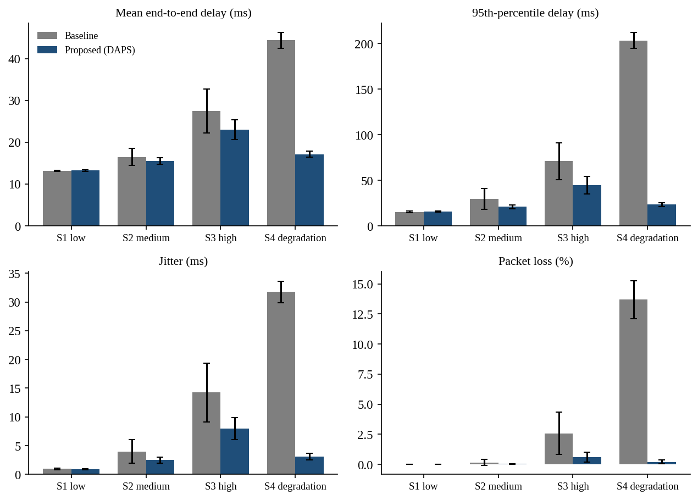
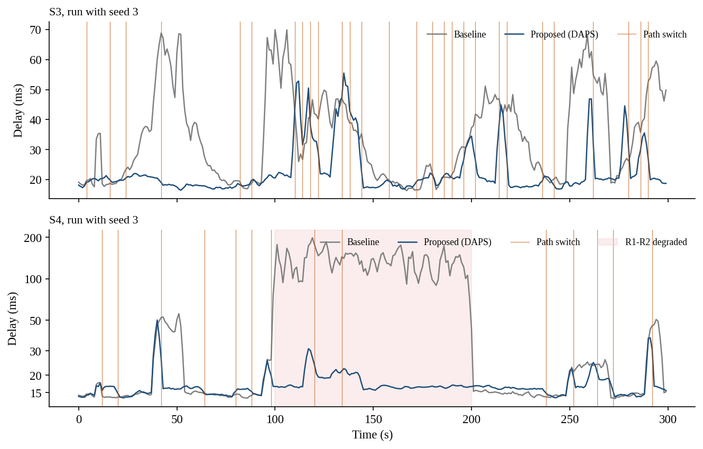
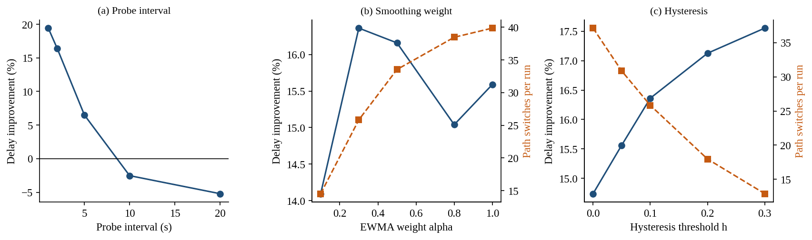
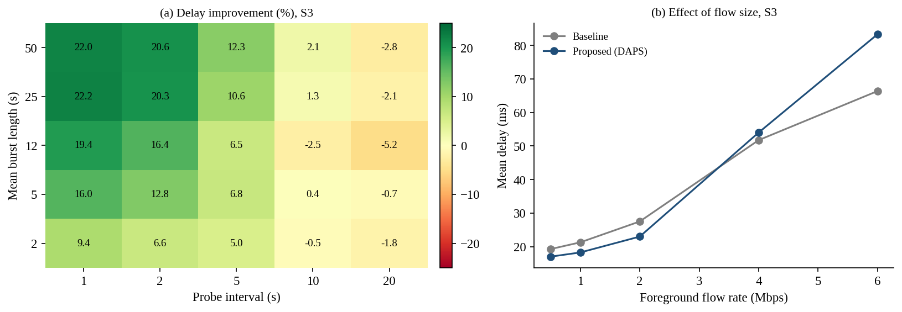

Comprehensive unit and integration test suite executing mathematical models, routing logic, and delay decompositions.
Loading test stream...
Baseline OSPF Static Path (Orange) vs Delay-Aware Adaptive Path Selection (Blue)
Select a candidate path to highlight the route and inspect link bandwidth & physical propagation delays.
Data extracted from repeated runs with paired seeds (mean ± SD) with Student's t-test statistical validation.
| Scenario | Metric Evaluated | Baseline (OSPF) | DAPS (Proposed) | Improvement (%) | Statistical p-Value |
|---|

Bar charts displaying delay, jitter, and loss reductions across S1, S2, S3, and S4.

Delay over time (seed 3). Shows DAPS successfully dodging S3 bursts and S4 degradation.

Effect of probe interval, EWMA alpha, and hysteresis on delay and path switching frequency.

Empirical evidence of self-induced congestion above 4 Mbps and stale probing above 10 seconds.